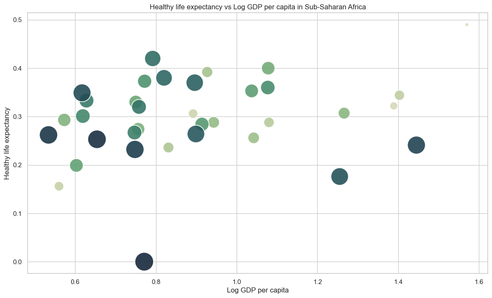

Happiness in Africa#
import pandas as pd
import numpy as np
import matplotlib.pyplot as plt
import seaborn as sns
# Customize the style of the plots
sns.set_theme(style="whitegrid")
path_to_file = './data/World-happiness-report-2024.csv'
df = pd.read_csv(path_to_file)
print(f'Columns: {df.columns}')
print(f'Shape: {df.shape}')
df.head()
Columns: Index(['Country name', 'Regional indicator', 'Ladder score', 'upperwhisker',
'lowerwhisker', 'Log GDP per capita', 'Social support',
'Healthy life expectancy', 'Freedom to make life choices', 'Generosity',
'Perceptions of corruption', 'Dystopia + residual'],
dtype='object')
Shape: (143, 12)
| Country name | Regional indicator | Ladder score | upperwhisker | lowerwhisker | Log GDP per capita | Social support | Healthy life expectancy | Freedom to make life choices | Generosity | Perceptions of corruption | Dystopia + residual | |
|---|---|---|---|---|---|---|---|---|---|---|---|---|
| 0 | Finland | Western Europe | 7.741 | 7.815 | 7.667 | 1.844 | 1.572 | 0.695 | 0.859 | 0.142 | 0.546 | 2.082 |
| 1 | Denmark | Western Europe | 7.583 | 7.665 | 7.500 | 1.908 | 1.520 | 0.699 | 0.823 | 0.204 | 0.548 | 1.881 |
| 2 | Iceland | Western Europe | 7.525 | 7.618 | 7.433 | 1.881 | 1.617 | 0.718 | 0.819 | 0.258 | 0.182 | 2.050 |
| 3 | Sweden | Western Europe | 7.344 | 7.422 | 7.267 | 1.878 | 1.501 | 0.724 | 0.838 | 0.221 | 0.524 | 1.658 |
| 4 | Israel | Middle East and North Africa | 7.341 | 7.405 | 7.277 | 1.803 | 1.513 | 0.740 | 0.641 | 0.153 | 0.193 | 2.298 |
ss_africa = df[df['Regional indicator']=='Sub-Saharan Africa']
ss_africa.sort_values(by=['Healthy life expectancy','Log GDP per capita'], ascending=[False, False])
| Country name | Regional indicator | Ladder score | upperwhisker | lowerwhisker | Log GDP per capita | Social support | Healthy life expectancy | Freedom to make life choices | Generosity | Perceptions of corruption | Dystopia + residual | |
|---|---|---|---|---|---|---|---|---|---|---|---|---|
| 69 | Mauritius | Sub-Saharan Africa | 5.816 | 5.927 | 5.706 | 1.570 | 1.358 | 0.490 | 0.641 | 0.123 | 0.118 | 1.517 |
| 129 | Ethiopia | Sub-Saharan Africa | 3.861 | 3.997 | 3.725 | 0.792 | 0.915 | 0.420 | 0.441 | 0.270 | 0.101 | 0.923 |
| 110 | Mauritania | Sub-Saharan Africa | 4.505 | 4.673 | 4.337 | 1.078 | 0.705 | 0.400 | 0.343 | 0.133 | 0.198 | 1.649 |
| 98 | Senegal | Sub-Saharan Africa | 4.969 | 5.096 | 4.841 | 0.927 | 0.751 | 0.392 | 0.607 | 0.152 | 0.069 | 2.071 |
| 130 | Tanzania | Sub-Saharan Africa | 3.781 | 3.917 | 3.644 | 0.820 | 0.706 | 0.380 | 0.709 | 0.191 | 0.257 | 0.717 |
| 116 | Uganda | Sub-Saharan Africa | 4.372 | 4.501 | 4.243 | 0.772 | 1.151 | 0.373 | 0.587 | 0.178 | 0.054 | 1.256 |
| 131 | Comoros | Sub-Saharan Africa | 3.566 | 3.754 | 3.378 | 0.896 | 0.328 | 0.370 | 0.172 | 0.128 | 0.160 | 1.512 |
| 119 | Ghana | Sub-Saharan Africa | 4.289 | 4.396 | 4.182 | 1.077 | 0.747 | 0.360 | 0.623 | 0.183 | 0.028 | 1.273 |
| 113 | Kenya | Sub-Saharan Africa | 4.470 | 4.595 | 4.344 | 1.037 | 0.895 | 0.353 | 0.519 | 0.282 | 0.069 | 1.316 |
| 135 | Malawi | Sub-Saharan Africa | 3.421 | 3.561 | 3.281 | 0.617 | 0.410 | 0.349 | 0.571 | 0.135 | 0.136 | 1.203 |
| 94 | Gabon | Sub-Saharan Africa | 5.106 | 5.243 | 4.969 | 1.403 | 1.038 | 0.344 | 0.516 | 0.045 | 0.100 | 1.660 |
| 122 | Madagascar | Sub-Saharan Africa | 4.228 | 4.359 | 4.097 | 0.628 | 0.823 | 0.333 | 0.250 | 0.172 | 0.123 | 1.897 |
| 111 | Gambia | Sub-Saharan Africa | 4.485 | 4.625 | 4.344 | 0.750 | 0.684 | 0.330 | 0.459 | 0.324 | 0.048 | 1.890 |
| 82 | South Africa | Sub-Saharan Africa | 5.422 | 5.549 | 5.295 | 1.389 | 1.369 | 0.322 | 0.537 | 0.078 | 0.034 | 1.693 |
| 123 | Togo | Sub-Saharan Africa | 4.214 | 4.330 | 4.098 | 0.758 | 0.586 | 0.320 | 0.453 | 0.127 | 0.156 | 1.814 |
| 105 | Namibia | Sub-Saharan Africa | 4.832 | 4.958 | 4.705 | 1.266 | 1.212 | 0.307 | 0.470 | 0.069 | 0.061 | 1.446 |
| 88 | Congo (Brazzaville) | Sub-Saharan Africa | 5.221 | 5.396 | 5.047 | 0.892 | 0.622 | 0.306 | 0.523 | 0.124 | 0.138 | 2.617 |
| 120 | Liberia | Sub-Saharan Africa | 4.269 | 4.474 | 4.063 | 0.619 | 0.673 | 0.301 | 0.546 | 0.178 | 0.075 | 1.878 |
| 108 | Niger | Sub-Saharan Africa | 4.556 | 4.712 | 4.401 | 0.573 | 0.677 | 0.293 | 0.615 | 0.145 | 0.147 | 2.107 |
| 95 | Ivory Coast | Sub-Saharan Africa | 5.080 | 5.224 | 4.936 | 1.080 | 0.578 | 0.288 | 0.547 | 0.120 | 0.164 | 2.303 |
| 103 | Cameroon | Sub-Saharan Africa | 4.874 | 4.996 | 4.753 | 0.943 | 0.856 | 0.288 | 0.521 | 0.126 | 0.060 | 2.080 |
| 115 | Benin | Sub-Saharan Africa | 4.377 | 4.510 | 4.245 | 0.914 | 0.128 | 0.284 | 0.567 | 0.112 | 0.252 | 2.121 |
| 109 | Burkina Faso | Sub-Saharan Africa | 4.548 | 4.686 | 4.410 | 0.756 | 0.685 | 0.274 | 0.483 | 0.173 | 0.179 | 1.999 |
| 121 | Mali | Sub-Saharan Africa | 4.232 | 4.347 | 4.117 | 0.747 | 0.688 | 0.267 | 0.586 | 0.120 | 0.090 | 1.734 |
| 133 | Zambia | Sub-Saharan Africa | 3.502 | 3.636 | 3.368 | 0.899 | 0.809 | 0.264 | 0.727 | 0.168 | 0.109 | 0.526 |
| 138 | Congo (Kinshasa) | Sub-Saharan Africa | 3.295 | 3.462 | 3.128 | 0.534 | 0.665 | 0.262 | 0.473 | 0.189 | 0.072 | 1.102 |
| 101 | Nigeria | Sub-Saharan Africa | 4.881 | 5.018 | 4.744 | 1.042 | 1.075 | 0.256 | 0.566 | 0.201 | 0.019 | 1.722 |
| 139 | Sierra Leone | Sub-Saharan Africa | 3.245 | 3.366 | 3.124 | 0.654 | 0.566 | 0.253 | 0.469 | 0.181 | 0.053 | 1.068 |
| 136 | Botswana | Sub-Saharan Africa | 3.383 | 3.558 | 3.209 | 1.445 | 0.969 | 0.241 | 0.567 | 0.014 | 0.082 | 0.066 |
| 96 | Guinea | Sub-Saharan Africa | 5.023 | 5.166 | 4.881 | 0.831 | 0.622 | 0.236 | 0.521 | 0.210 | 0.107 | 2.497 |
| 137 | Zimbabwe | Sub-Saharan Africa | 3.341 | 3.457 | 3.226 | 0.748 | 0.850 | 0.232 | 0.487 | 0.096 | 0.131 | 0.797 |
| 112 | Chad | Sub-Saharan Africa | 4.471 | 4.630 | 4.313 | 0.603 | 0.805 | 0.199 | 0.411 | 0.218 | 0.113 | 2.122 |
| 134 | Eswatini | Sub-Saharan Africa | 3.502 | 3.673 | 3.331 | 1.255 | 0.925 | 0.176 | 0.284 | 0.059 | 0.116 | 0.686 |
| 89 | Mozambique | Sub-Saharan Africa | 5.216 | 5.406 | 5.027 | 0.560 | 0.883 | 0.156 | 0.728 | 0.158 | 0.196 | 2.536 |
| 140 | Lesotho | Sub-Saharan Africa | 3.186 | 3.469 | 2.904 | 0.771 | 0.851 | 0.000 | 0.523 | 0.082 | 0.085 | 0.875 |
# Scatter plot of Healthy life expectancy vs Log GDP per capita
cmap = sns.cubehelix_palette(35,rot=-.6)
plt.figure(figsize=(14,8))
sns.scatterplot(
x='Log GDP per capita',
y='Healthy life expectancy',
data=ss_africa,
hue='Country name',
palette= cmap,
size='Ladder score',
sizes=(1000, 40),
legend=False,
alpha=0.9
)
plt.title('Healthy life expectancy vs Log GDP per capita in Sub-Saharan Africa')
plt.show()
